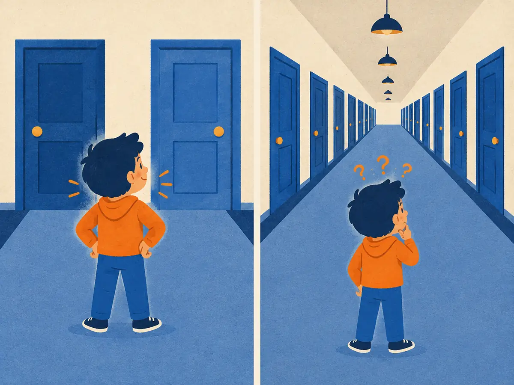

Perplexity
Before anyone asks an LLM a single question, its builders already have a number for how good it is: how surprised it is by real text it has never seen. That number is perplexity. It is cheap, smooth and tracked through every pretraining run. It is also easy to misread.
By the end you can
- Compute perplexity from a model's per-token probabilities, and convert between perplexity and cross-entropy loss.
- Read perplexity as an effective number of choices per token.
- Explain why perplexities are only comparable on the same tokenizer and test data, and what perplexity can't tell you.
Take your best guess. Being wrong now helps the right answer stick later.
On every token of a test text, a model gives the correct next token probability exactly 1/4. What is its perplexity?
- 0.25
- 4
- 1.39
- 25
Model A has perplexity 8 on Wikipedia. Model B, which uses a different tokenizer, has perplexity 12 on the same Wikipedia text. Which model predicts that text better?
- A, because lower perplexity is better
- B, because higher perplexity means more knowledge
- They are equally good
- You can't tell from these numbers alone
How surprised is the model?
A language model reads text and, at every position, gives a probability to every possible next token (M2.2). To evaluate it, take text it has never seen and look at one number per position: the probability $p$ it gave to the token that actually came next.
Turn each probability into surprise, $-\log p$: near 0 when the model was confident and right, large when the real token was one it thought unlikely. Average the surprise over all $N$ tokens and exponentiate:
$$\text{PPL} = \exp\!\Big(-\frac{1}{N}\sum_{t=1}^{N} \log p_\theta(x_t \mid x_{<t})\Big)$$Here $x_t$ is the $t$-th token of the test text, $x_{<t}$ is everything before it, $p_\theta(x_t \mid x_{<t})$ is the probability the model with parameters $\theta$ gave that token, and $\log$ is the natural log. The part inside $\exp(\cdot)$ is exactly the cross-entropy loss (in nats) that pretraining minimises, measured on held-out text. So:
- $\text{PPL} = e^{\text{loss}}$ with the loss in nats, or $2^{\text{loss}}$ with the loss in bits. Same number either way.
- Equivalently, PPL is the geometric mean of $1/p$ over the tokens. Lower is better; the minimum is 1.
An effective number of choices
If a model spread its probability evenly over $k$ tokens and the right one was always among them, every token would get $p = 1/k$, and the perplexity would be exactly $k$. That gives the most useful reading: perplexity is how many equally likely options the model is effectively torn between, on average, at each step.
- PPL = 1: the model always put probability 1 on the right token. Perfect, and impossible on real text.
- PPL = 50,000 with a 50,000-token vocabulary: no better than uniform guessing.
- Good LLMs on ordinary held-out web text typically land in the single digits per token; the exact value depends heavily on the data and tokenizer, as the next sections show.
Because it averages logs, one confident miss costs a lot: a token given $p = 0.001$ adds a surprise of $6.9$ nats, as much as ten tokens each predicted with $p = 0.5$.
Explain like I'm 5

Imagine guessing which door the next word is hiding behind.
If you only have to choose between two doors, you feel pretty sure of yourself. In a long hallway with lots of doors, you're puzzled: it could be any of them.
Perplexity counts the doors. A small number means the model only had to pick between a few doors, so it knew the text well. A big number means it was lost in a long hallway.
Where it breaks: real models don't see a few equal doors. They give every word a different chance. Perplexity is the number of equal doors that would be just as confusing on average.
Worked example
A model predicts four tokens of held-out text, giving the actual tokens probabilities $0.5$, $0.25$, $0.8$ and $0.1$.
- Surprises $-\ln p$: $0.693$, $1.386$, $0.223$, $2.303$.
- Sum: $4.605$. Mean over 4 tokens: $1.151$ nats. That is the loss.
- Perplexity: $e^{1.151} \approx 3.16$.
- Check with the geometric mean of $1/p$: $(2 \times 4 \times 1.25 \times 10)^{1/4} = 100^{1/4} \approx 3.16$ ✓
Three tokens, with probabilities $0.1$, $0.5$ and $0.2$ on the actual tokens. Use natural logs.
- Surprise of the first token, $-\ln 0.1 =$
- Mean surprise over the three tokens:
- Perplexity:
- A model's validation loss is $0.693$ nats per token. Its perplexity is
Playground: one bad token
Set the probability the model gave each of four actual tokens. Try the presets, especially “one confident miss”.
Only compare like with like
A perplexity is a property of a model + tokenizer + test text. Change any one and the number moves, even if the model's skill doesn't.
Same tokenizer
Perplexity is per token, and tokenizers disagree about what a token is (P3.3). Suppose two models assign the same total probability to a 100-byte test text, a total surprise of 50 nats:
- Model A's tokenizer cuts the text into 25 tokens: $50/25 = 2.0$ nats per token, so PPL $= e^{2.0} \approx 7.39$.
- Model B's tokenizer cuts it into 40 shorter tokens: $50/40 = 1.25$ nats per token, so PPL $= e^{1.25} \approx 3.49$.
B looks twice as good, yet both models find the text exactly equally likely. Shorter tokens are each easier to predict, but there are more of them. The fix is to normalise by something tokenizer-free, such as bits per byte: $50 / \ln 2 \approx 72.1$ bits over 100 bytes $= 0.72$ bits per byte for both. The Pile (Gao et al., 2020) reports bits per byte for exactly this reason.
Same test data
Predictable text (legal boilerplate, code with lots of repeated syntax) gets low perplexity; tweets and poetry get high perplexity. A perplexity on one dataset says nothing about another. The details of the protocol matter too: how long a context each token gets, and whether documents are scored in overlapping windows or cut into chunks. Finally, if the test text leaked into training, perplexity will be flatteringly low. That's contamination, the topic of M4.3.
What perplexity does and doesn't tell you
It does tell you how well a model predicts text like the test set. It's cheap (one forward pass, no generation), low-noise and smooth, which is why pretraining teams watch validation loss on held-out data from each domain, and why scaling laws (M2.4) are written in terms of loss. Within one model family, same tokenizer and same data, lower loss usually goes with better downstream scores.
It doesn't tell you whether the model answers correctly, follows instructions, refuses safely or is pleasant to use:
- Most tokens are easy (“the”, closing brackets). The few that matter, such as the final number of a maths answer, are a tiny share of the average.
- Post-training (M3) deliberately reshapes the distribution toward a helpful assistant's style. Chat models often score worse perplexity on raw web text than their base models while being far more useful.
- Perplexity scores the model's predictions on given text. It never looks at what the model writes when it generates freely.
That's why evaluation doesn't stop here. Next come benchmarks (M4.2), which test specific skills with known answers, and model-based judges (M4.4) for open-ended outputs.
A colleague says “our new model has perplexity 6, theirs has 9, so ours is better”. What would you ask before agreeing, and why?
A model's validation cross-entropy loss is 2.0 nats per token. Its perplexity is about…
- 2.0
- 4.0
- 7.4
- 100
Which change can lower per-token perplexity without the model predicting the text any better?
- Switching to a tokenizer that cuts the same text into more, shorter tokens
- Training on more data from the same distribution
- Training a larger model on the same data
- Fixing bugs in the data pipeline
A model predicts 99 tokens with $p = 0.9$ and one token with $p = 0.0001$. Why does that single token move the perplexity so much?
- Perplexity only counts the worst token
- The rare token is weighted 100 times more by the formula
- It doesn't; one token out of 100 barely matters
- Surprise $-\ln p$ grows without limit as $p \to 0$: that one token adds 9.2 nats, as much as about 87 of the confident tokens
After chat fine-tuning, a model's perplexity on raw web text goes up. What should you conclude?
- Fine-tuning broke the model; roll it back
- Nothing about usefulness: the model now fits a different distribution (assistant answers), so it predicts raw web text less well
- The tokenizer must have changed
- The test set is contaminated
Key takeaways
- $\text{PPL} = e^{\text{loss}}$: the exponential of the average surprise $-\log p$ on the actual next tokens (the cross-entropy loss).
- Read it as an effective number of equally likely choices per token. 1 is perfect; the vocabulary size is uniform guessing.
- It's per token, so compare only with the same tokenizer and test data; across tokenizers use bits per byte.
- Low perplexity means good next-token prediction, not helpfulness, correctness or safety.
Compute perplexity from token probabilities, then build a tiny bigram language model and compare its perplexity on training text and held-out text. About 20 minutes, NumPy only, runs free in your browser.
Add this lesson's cards to your spaced-review deck.